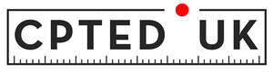
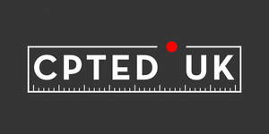

Trade Mark Journal No.2025/025 20 June 2025
UK00004214598 5 June 2025 (41,45)
Mark 1

Mark 2

- Class 41
- Training of personnel to ensure maximum security protection; Training; Training of financial personnel; Personnel training; Training services for personnel; Training and further training consultancy; Training of personnel in food technology; Training services; Management training services; Education and training; Driver safety training; Drilling technology safety training; Fitness training services; Employment training; Technical training relating to safety; Education and training services in the field of occupational health and safety; Physical training services; Computer training services; Training and education services; Education and training services; Educational and training programs in the field of risk management; Training services relating to health and safety; Education and training in the field of occupational health and safety; Education and training consultancy; Training in the maintenance of computers; Computer education training services; Personal training services; Consultancy services relating to the education and training of management and of personnel; Training consultancy; Road safety training; Engineering training services; Computer training; Training of personnel in skills relating to office systems; Vocational training services; Practical training services; Management training consultancy services; Computer training advisory services; Vocational training; Education and training in the field of business management; Training in business management; Educational and training services; Business training; Training in the use of computers; Provision of training courses in personal development; Training or education services in the field of life coaching; Provision of training and education; Provision of education and training; Staff training services; Industrial training; Military base training; Provision of training; Teacher training services; Training in the field of business management; Business training services; Training services in the field of computer software development; Advanced training; Vocational skills training (Provision of -); Courses (Training -) relating to management.
- Class 45
- Security guard services; Security services; Security consultancy; Passport control services [security]; Security guard services for buildings; Airport security services; Security monitoring services; Security guarding for facilities; Safety, rescue, security and enforcement services; Security services for the protection of property; Monitoring of security systems; Physical security services; Physical security consultancy; Security guard services for the protection of property and individuals; Security screening of baggage; Security assessment of risks; Security services for the protection of individuals; Security services for buildings; Rental of security surveillance apparatus; Monitoring of burglar and security alarms; Monitoring burglar and security alarms; Rental of equipment for safety, rescue, security and enforcement; Rental of security surveillance equipment; Security services for the physical protection of individuals; Security services for the protection of property and individuals; Rental of security apparatus; Airport baggage security inspection services; Airport baggage security screening services; Baggage security inspections for airlines; Baggage inspection for security purposes; Inspection (Baggage -) for security purposes; Opening of security locks; Locks (Opening of security -); Security inspection services for others; Security services for the physical protection of tangible property; Electronic monitoring services for security purposes; Security control of persons and luggage in airports; Public events security services; Microchip security services for pets; Security marking of documents; Consulting services in the field of national security; Security marking of goods; Airline passenger security screening services; Airline passenger security screening; Providing information relating to security guard services; Security guarding of facilities via remote monitoring systems; Security services for the physical protection of tangible property and individuals; Security clearance for preparation of identification cards.
CPTED UK Ltd